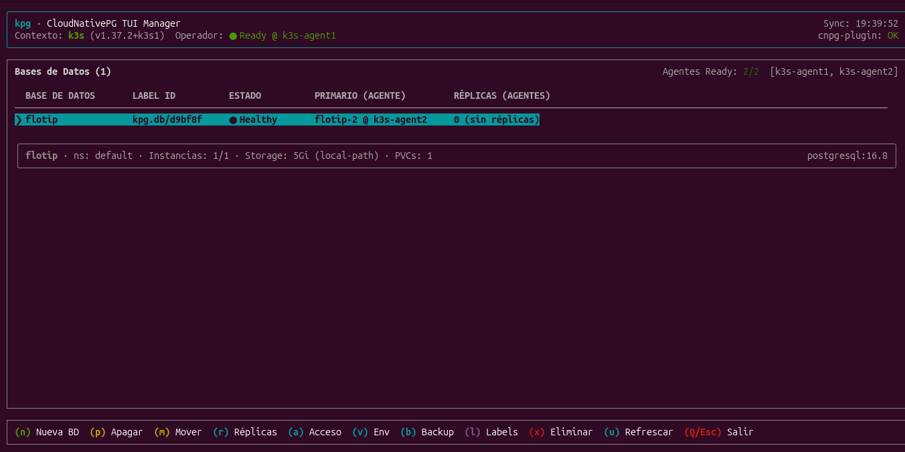

kpg — CloudNativePG TUI
Interfaz interactiva de terminal para crear, trasladar, respaldar y administrar
bases de datos PostgreSQL con CloudNativePG en Kubernetes y k3s,
sin depender de kubectl port-forward.

Administración de PostgreSQL en Kubernetes desde una sola pantalla
kpg es una herramienta de terminal escrita en Node.js, TypeScript e Ink que envuelve
kubectl y el plugin kubectl-cnpg. Automatiza el flujo operativo de
bases de datos PostgreSQL en clusters Kubernetes / k3s (especialmente con almacenamiento
local-path) mediante atajos de una sola tecla.
Dashboard y pre-flight
Verifica kubectl, kubectl-cnpg y el operador CNPG al iniciar
(con instalador integrado) y muestra el estado del cluster cada 5 segundos.
Traslado entre nodos sin pérdida
Mueve una base de datos de un agente a otro con un pipeline guiado de 8 etapas: réplica temporal, sincronización LSN, promoción y limpieza segura.
Hibernación y réplicas
Apaga o reactiva bases de datos conservando PVCs y credenciales, o ajusta el número de réplicas protegiendo siempre la instancia primaria.
Acceso, NodePort y TLS
Administra usuarios, permisos por tabla, servicios NodePort que sobreviven a traslados, rotación de contraseñas y política TLS en caliente.
Generador de archivos .env
Genera y previsualiza configuraciones .env multi-usuario con selector
de carpetas y cadenas de conexión adaptadas a tu política TLS.
Backups locales .sql
Descarga respaldos completos vía pg_dump en streaming directo a tu
equipo, sin archivos temporales en el pod ni túneles manuales.
Listo para ejecutar en segundos
Usa los binarios portables precompilados (sin necesidad de instalar Node.js) o ejecuta el proyecto directamente desde el código fuente.
-
kubectl
instalado y configurado con acceso a tu cluster (
~/.kube/config). -
Plugin
kubectl-cnpg
instalado y disponible en tu
PATH. - Node.js v20+ solo si eliges ejecutar o compilar desde el código fuente.
curl -fsSL https://k3stool.github.io/kpg/install.sh | sh
Instala automáticamente el comando kpg en /usr/local/bin/kpg
(y, si faltan, kubectl y kubectl-cnpg). Al terminar, solo ejecuta kpg.
Si prefieres instalar únicamente el binario: usa KPG_SKIP_DEPS=1 o
descárgalo manualmente.
Invoke-WebRequest -Uri "https://github.com/k3stool/kpg/releases/latest/download/kpg-win.exe" -OutFile "kpg-win.exe" .\kpg-win.exe
También puedes descargar directamente kpg-win.exe desde el navegador y ejecutarlo en Windows Terminal o PowerShell.
git clone https://github.com/k3stool/kpg.git cd kpg npm install npm start
Para compilar tus propios ejecutables portables usa npm run build:linux,
npm run build:win o npm run build:all.
Descargas y recursos
Accesos directos al repositorio, binarios oficiales y documentación relacionada.